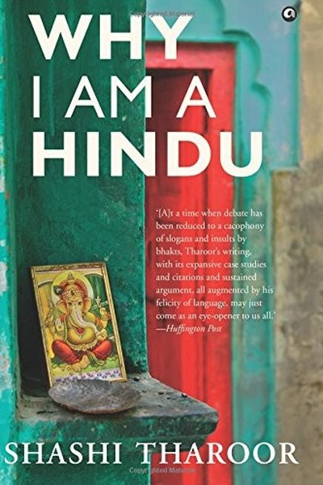

Library › Psychology & People
Why I Am a Hindu — Summary & Key Lessons

A faith built on questioning, not dogma.
📖 OPEN THE FULL INTERACTIVE BREAKDOWN →🌐 Read it in Hindi, Hinglish, Gujarati, Tamil & 22 more languages — free, with audio.
💡 The Big Idea
Shashi Tharoor's personal and political defence of Hinduism as a lived culture: a faith of pluralism, questioning and diversity that has absorbed every influence without losing its core. Tharoor argues that Hinduism's genius is its refusal of dogma — no single founder, no single book, no single truth — and that this tradition of debate and tolerance is India's greatest inheritance. He distinguishes the faith's philosophical richness from its later social distortions (caste, patriarchy), and calls for reclaiming the tradition's best values: inquiry, inclusivity and the sacredness of questioning.
🧠 The 6 Key Lessons
Lesson 1: The Faith That Questions: Hinduism's Anti-Dogma DNA
Part 1: The Faith
Tharoor's central argument: Hinduism is the only major faith built on questioning rather than conformity — no single founder, no single scripture that must be accepted, no single path to truth. The tradition even institutionalizes doubt (the Nasadiya hymn questions creation itself). The lesson: a system that encourages questioning is more adaptive than one that demands obedience. In teams, companies and minds, the culture that welcomes 'why' survives change; the one that punishes doubt ossifies. The faith's DNA is the strategy: pluralism is not weakness but resilience.
📖 Example: Tharoor cites the Vedic tradition of debate, where philosophers publicly disputed and the audience judged — an institutionalized marketplace of ideas millennia before the Enlightenment. Read the full example →
⚡ Do this: Institutionalize one space for questioning this week — a team debate, a 'challenge the assumption' slot, a journal for doubts. The question is the tradition's gift.
Lesson 2: The Gita as Life Skills: Action Without Attachment
Part 2: The Text
Tharoor reads the Bhagavad Gita not as theology but as a manual for action: Krishna's counsel to Arjuna is to act with full commitment while staying unattached to the outcome — 'karmanye vadhikaraste, ma phaleshu kadachana' (your right is to action, never to its fruits). The lesson is psychological: the person who attaches self-worth to outcomes becomes fragile, while the person who acts wholeheartedly and releases the result stays steady through both. This is not passivity — it is the calm of full effort without ownership of the scoreboard. Detachment is the sustainable-performance hack.
📖 Example: Arjuna, the greatest warrior, is paralysed not by skill but by attachment to outcomes — and Krishna's counsel restores his power by shifting focus from results to right action. The performance psychology is ancient. Read the full example →
⚡ Do this: Pick one high-stakes task and consciously shift: give it full effort, then release the outcome. Rehearse the detachment daily — the effort is yours, the result is not.
Lesson 3: Pluralism Is the Practice: Many Paths, One Reality
Part 3: The Culture
Tharoor celebrates Hinduism's 'no one way' ethos: gods multiply, paths coexist, contradictions are tolerated. The tradition's answer to the question 'which is true?' is 'many truths, depending on the seeker'. The lesson: pluralism is not relativism that refuses to act — it is the practical wisdom that different people need different paths, and forcing one path on all is the error. In organizations, the leader who accommodates different working styles, motivations and routes to the same goal gets commitment that uniformity never does. Diversity is the system's immune system.
📖 Example: Tharoor points to how Hinduism absorbed and coexisted with Buddhism, Jainism, Islam and Christianity — not by erasing difference but by making space for it. The culture's strength was its porosity. Read the full example →
⚡ Do this: Accommodate one genuinely different approach this week — in how a teammate works, how a family member thinks, how a solution could be reached. Let the other path be valid.
Lesson 4: Reclaiming the Tradition: Separating Core From Corruption
Part 4: The Reform
Tharoor is unsparing about Hinduism's social failures — caste discrimination, patriarchy, superstition — and argues they are corruptions, not the core. His method: separate the tradition's philosophical wealth (questioning, inclusivity, inner work) from its historical distortions, and reform boldly. The lesson: every inheritance — a faith, a company, a family, a culture — contains both gold and dross, and the mature inheritor sorts them deliberately. The person who defends everything inherited is a prisoner of the past; the one who rejects everything is a prisoner of rebellion. Curate your inheritance.
📖 Example: Tharoor honours reformers from Buddha to Ambedkar who challenged caste within the Indic tradition — proof that the tradition's own values (questioning) provide the tools for its reform. Read the full example →
⚡ Do this: Audit one inheritance (workplace norms, family rules, personal habits): list what serves you and what doesn't. Keep the gold deliberately; start reforming one piece of dross.
Lesson 5: The Argumentative Tradition: Democracy Needs Debate
Part 5: The Politics
Drawing on Amartya Sen, Tharoor argues that India's argumentative tradition made its democracy possible — a people used to disputing everything can tolerate opposition. The lesson: debate is not noise; it is the machinery of collective intelligence. The organization that allows real argument — where the best idea wins regardless of rank — makes better decisions than the one that demands consensus or obedience. The leader's job is to keep the argument productive: focused on issues, respectful of people, open to being wrong. Democracy (and good management) is institutionalized argument.
📖 Example: Tharoor traces the acceptance of India's political opposition to a civilizational habit of dissent — the nation that argues can afford democracy because no one expects to win forever. Read the full example →
⚡ Do this: In your next decision, run a structured argument: assign someone to argue the opposite case, then decide on merits. The debate is the decision's quality control.
Lesson 6: The Hindu's Gift: A Personal, Portable Faith
Part 6: The Inheritance
Tharoor ends with what Hinduism gives the individual: a faith that is personal rather than congregational, portable across geographies, and compatible with science because it asks for experience rather than blind belief. The lesson: the best 'operating systems' — faiths, philosophies, frameworks — are those that work alone, adapt to context, and reward testing. The person who adopts a system they can actually run — personally, experimentally, honestly — keeps it for life; the one who inherits a system they must defend without testing loses it at the first real question. Inherit deliberately, test honestly.
📖 Example: Tharoor describes practising his Hinduism across continents and decades — the faith's portability and personal nature are its survival features. It needed no building, no clergy, no collective to function. Read the full example →
⚡ Do this: Test your personal operating system — your values, your faith, your framework — with one honest experiment this month. Keep what survives the test; revise what doesn't.
✅ 5-Step Action Plan
- Institutionalize one space for questioning this week.
- Practice action without attachment on one high-stakes task.
- Accommodate one genuinely different approach.
- Audit one inheritance — keep the gold, start reforming the dross.
- Run a structured argument before your next decision.
⚠️ When This Doesn't Work
Tharoor's defence of secular, pluralist Hinduism is the sanest book on Indian identity ever written — and Rajneeshpuram is the warning about faith without accountability: a movement born from Indian spirituality that became a surveillance state in Oregon, poisoning its neighbours and collapsing in scandal. Tharoor's argument — that Hinduism's strength is its questioning tradition — is exactly the tradition that the Rajneesh movement abandoned. The caveat: every religion, including the most pluralist, can be captured by its most authoritarian interpreters. The defence of a faith is not devotion — it is the constant, Tharoor-style questioning of everyone who claims to speak for it.
💀 The Graveyard Proves It
🕉️ Rajneeshpuram — The Spiritual Utopia That Became a Surveillance State. Burn: A commune of thousands, 751 poisonings, and the guru's movement exiled from America. Read the full case study →
💬 Best Quotes from Why I Am a Hindu
- “Hinduism's genius is its refusal of dogma — a faith built on questioning.”
- “Act with full commitment, unattached to the outcome — the effort is yours, the result is not.”
- “Curate your inheritance: keep the gold, reform the dross.”
Interactive version: mark lessons as read, listen in your language, share quote cards.